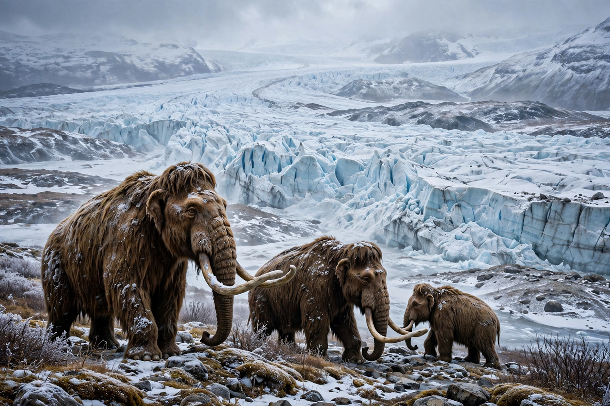

| Quaternary glaciation | |
|---|---|
| Period | 2.58 million years ago – present |
| Epochs | Pleistocene, Holocene |
| Major ice sheets | Laurentide, Fennoscandian, Cordilleran, Antarctic, Greenland |
| Last glacial maximum | ~26,500–19,000 years ago |
| Drivers | Milankovitch cycles, plate tectonics, CO₂ feedbacks |
| Present state | Interglacial (Holocene) |

The Quaternary glaciation, also known as the Pleistocene glaciation or the current ice age, is an alternating series of glacial and interglacial periods during the Quaternary period that began 2.58 million years ago and is ongoing. During this period, large ice sheets have repeatedly advanced and retreated over North America, northern Europe and Asia, while permanent ice has persisted in Antarctica and Greenland. Geologists define the present day as lying within an interglacial of this ice age: the Holocene.
The onset of widespread Northern Hemisphere glaciation about 2.7–2.58 million years ago followed a long Cenozoic cooling trend. Contributing causes include the closure of the Isthmus of Panama, which reorganised ocean circulation; the uplift of the Tibetan Plateau and other ranges, accelerating silicate weathering and drawing down atmospheric carbon dioxide; and changes in the transport of moisture to high northern latitudes. Once ice sheets grew large enough, their high albedo and elevation reinforced further cooling.
For the first roughly 1.7 million years of the Quaternary, glacial cycles followed a ~41,000-year rhythm paced by changes in Earth's axial tilt. During the Mid-Pleistocene Transition (about 1.25–0.7 million years ago) the cycles lengthened to roughly 100,000 years, matching the eccentricity cycle, and grew in amplitude. At the Last Glacial Maximum (~26,500–19,000 years ago), global sea level stood about 120–130 metres below today's, the Laurentide Ice Sheet covered most of Canada and the northern United States, and the Fennoscandian Ice Sheet covered northern Europe.
Advancing ice scoured landscapes, carving the Great Lakes, the fjords of Norway and countless valleys, and deposited till, drumlins and terminal moraines on retreat. Sea-level fall exposed continental shelves, creating land bridges such as Beringia between Siberia and Alaska, which allowed the peopling of the Americas. Glacial meltwater pulses formed enormous proglacial lakes such as Lake Agassiz, whose sudden drainages may have disrupted ocean circulation and triggered abrupt climate events like the Younger Dryas. Repeated habitat fragmentation shaped the evolution and distribution of many species, including humans.
The chronology of the Quaternary glaciation is reconstructed from marine sediment cores (oxygen isotope stages), ice cores from Greenland and Antarctica, loess deposits, glacial landforms and radiometric dating of moraines. Serbian mathematician Milutin Milanković's theory that orbital variations pace the ice ages — Milankovitch cycles — was confirmed by deep-sea core records in the 1970s and remains the framework for understanding glacial timing, with greenhouse-gas and ice-albedo feedbacks amplifying the modest orbital forcing.
The Holocene interglacial began about 11,700 years ago. Orbital configuration suggests the current interglacial could be unusually long, and anthropogenic greenhouse-gas emissions have further delayed any prospect of renewed glaciation for at least tens of thousands of years. Meanwhile the remaining ice sheets of Greenland and Antarctica are shrinking under human-caused warming — the Quaternary ice age continues in a geological sense, but its present trajectory is one of retreat.